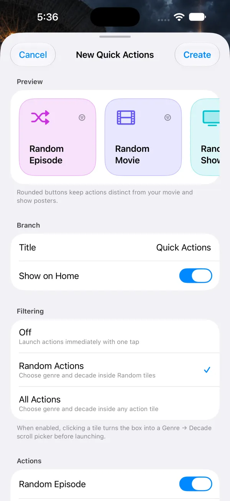

New
Quick Actions filtering
Choose a genre and then a decade inside a Quick Actions tile before it launches, for Random actions or every action.

 CedarRelease notes
CedarRelease notes
External TestFlight · Apple devices Early beta · Android TV
Build 87 lets Quick Actions tiles turn into a genre and decade picker, so a random pick lands closer to what you feel like watching. A new Playlist Cleaner tidies Live TV categories and channel names, and Branches now accept Trakt, Letterboxd, TMDB collection, IMDb chart and public MDBList links. On iPhone, iPad and Mac, Radio gets a redesigned Now Playing screen with synced lyrics, and Live TV comes to CarPlay. Duplicate files from several sources now merge into one choice, and removed titles can be restored to Continue Watching.
cedartv.github.io/cedar-tv-updates/apple/releases/1.0.0-build-87/
3 new, 2 improved
Choose a genre and then a decade inside a Quick Actions tile before it launches, for Random actions or every action.

Hide Live TV categories you never use and tidy channel names with the new Cleaner in Live TV & DVR settings.
Paste Trakt, Letterboxd, boxd.it, TMDB collection, IMDb chart or public MDBList links to add them as Branches.
A redesigned full-screen player with large artwork and synced lyrics; swipe up on the mini player to open it.
Open Live TV channels in CarPlay, with video while parked on iOS 26.4 or later.
1 new, 7 improved
Each page follows your Home layout until you customise it, so new profiles start with a familiar look.
The Movies and TV Shows pages leave out Live TV, sports, radio, recordings and Quick Actions Branches.
Logo and Marquee designs gain overlays, and Marquee no longer rotates on its own. VHS and Spine Numbers are retired.
The hero at the top of a Branch page now runs edge to edge.
The Cinematic, Detailed and Compact wide Home layouts are retired in favour of the remaining layouts.
A link Cedar can’t use as a Branch now explains what went wrong and which links work.
Random Movie and Random Show fall back to popular TMDB titles when your libraries have nothing to offer.
Bring back titles you removed from Continue Watching.
3 improved
Live TV audio keeps playing with the screen locked and reconnects after a dropped stream.
Apple Calendar events open the title in Cedar, show the network as the location and flag premieres and finales.
Switch teams with their logos in Box Score, with columns that fit the screen or scroll.
2 new, 1 improved
Identical files offered by several sources merge into one choice; on by default and can be turned off in Source Preferences.
Resize the player window to Original, 2160p, 1080p or 720p from Window › Player Size or with Control-Command-0 to 3.
AetherEngine 7.75.0 adds GPU inverse telecine, dav1d 1.5.5 and embedded fonts for MKV ASS subtitles.
9 fixed
3 known issues
Social and artwork
2 new
Poster Stories
NewShare a poster card as a Story on your Social page.
Save Artwork
NewSave or share any image from a title’s artwork editor.